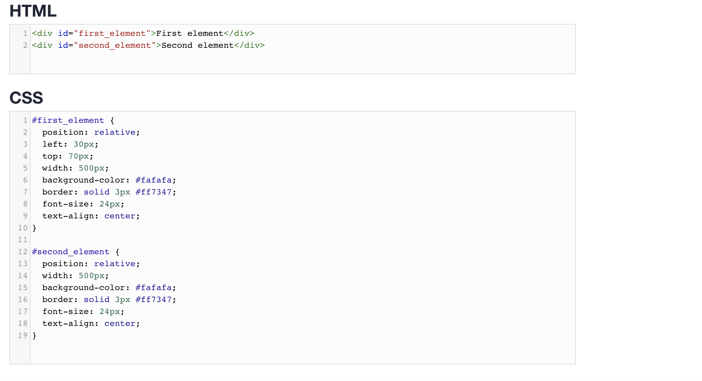
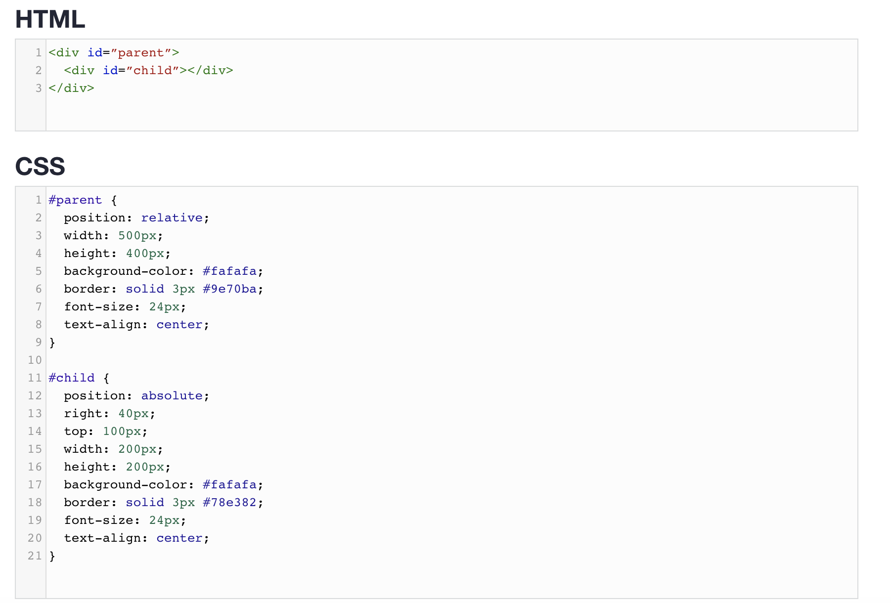

An Intro to Relative, Absolute, and Fixed Position
The CSS position property defines, as the name says, how the element is positioned on the web page.
10 September 2020
So, there are several types of positioning: static, relative, absolute, fixed, sticky, initial, and inherit.
First of all, let's explain what all of these types mean.
-
Static this is the default value, all elements are in order as they appear in the document.
Relative
-
Relative the element is positioned relative to its normal position.
Absolute
-
Absolute the element is positioned absolutely to its first positioned parent.
-
Fixed the element is positioned related to the browser window.
-
Sticky the element is positioned based on the user's scroll position.
The element is positioned based on the user's scroll position. Now that we have explained the basics, we will talk more about the two most commonly used position values - relative and absolute.
What Is Relative Positioning?
When you set the position relative to an element, without adding any other positioning attributes (top, bottom, right, left) nothing will happen. When you add an additional position, such as left: 20px the element will move 20px to the right from its normal position. Here, you can see that this element is relative to itself. When the element moves, no other element on the layout will be affected.
There is a thing you should keep in mind while setting position - relative to an element limits the scope of absolutely positioned child elements. This means that any element that is the child of this element can be absolutely positioned within this block.After this brief explanation, we need to back it up, by showing an example. In this example, you will see how the relatively positioned element moves when its attributes are changed. The first element moves to the left and top from its normal position, while the second element stays in the same place because none of the additional positioning attributes were changed.

What Is Absolute Positioning?
This type of positioning allows you to place your element precisely where you want it.The positioning is done relative to the first relatively (or absolutely) positioned parent element. In the case when there is no positioned parent element, it will be positioned related directly to the HTML element (the page itself).An important thing to keep in mind while using absolute positioning is to make sure it is not overused, otherwise, it can lead to a maintenance nightmare.The next thing, yet again, is to show an example. In the example, the parent element has the position set to relative. Now, when you set the position of the child element to absolute, any additional positioning will be done relative to the parent element. The child element moves relative to the top of the parent element by 100px and right of the parent element by 40px.

fixed
An element with position: fixed; is positioned relative to the viewport, which means it always stays in the same place even if the page is scrolled. The top, right, bottom, and left properties are used to position the element.
A fixed element does not leave a gap in the page where it would normally have been located.
Notice the fixed element in the lower-right corner of the page. Here is the CSS that is used:
Home